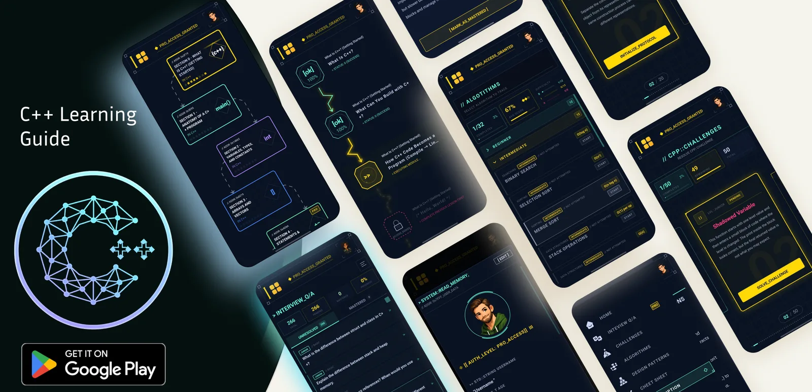

predict_output()
Read the code and say what it prints.
Learn C++ from your first program onwards, with lessons that make you think and challenges that make you look closer. Then practise with algorithms, design patterns and the questions interviewers really ask.
#include <iostream>
#include <string>
#include <vector>
int main() {
std::vector<std::string> path{
"pointers", "classes", "templates"};
for (const auto& topic : path)
std::cout << "Learned " << topic << '\n';
return 0;
}
// try a lesson, right here
This is how lessons work in the app: a short read, then one of each kind of question. Check your answer, and if it's wrong you get one more try before the explanation.
// interview prep
266 questions interviewers really ask, from junior to senior roles. Every one has a clear answer and a code example. Here are six from the app, try them:
// the learning path
Short sections that build on each other, each with its own review. A few stops along the way:
// how a lesson works
Read a little, then answer. These are the kinds of questions you'll meet.
Read the code and say what it prints.
One line is wrong. Which one, and why?
Two versions of the same code. Pick the right one.
Choose the right words to finish the code.
Match each term to what it means.
Put scrambled lines back in the right order.
Follow the values through the code, step by step.
A straight question with one clear answer.
// beyond the lessons
int count = 0; if (count = 10) alarm(); // always runs
Junior, medior and senior challenges. Find the wrong line and learn the mistake before your compiler teaches it to you.
while (lo <= hi) {
int mid = lo + (hi - lo) / 2;
if (v[mid] < key) lo = mid + 1;
else hi = mid - 1;
}
Searching, sorting and data structures, traced step by step so you see what each line does.
class Logger {
public:
static Logger& get() {
static Logger instance;
return instance;
}
};
The classic patterns, creational, structural and behavioural, with the problem each one solves and how it looks in C++.
std::sort(v.begin(), v.end()); auto it = std::find(v.begin(), v.end(), 42); auto node = std::make_unique<Node>();
The syntax and the standard library you keep looking up, collected by topic and ready when you need it.
// Q: Pointer or reference? // A: A reference can't be null // and can't be reseated. // [ mark as mastered ]
266 questions for junior, medior and senior roles, with answers you can mark as mastered. Try a few
streak.days += 1;
section.progress = 100;
badges.push_back("Pointers");
See how far you are in every section, keep your streak going and collect badges as you finish.
// inside the app

// how it's paid for
Start for free. Pro unlocks the full curriculum and everything else in the app, for a single payment that's yours to keep. There are no ads and no subscription.
struct Plan {
bool free_to_start = true;
bool pro_is_one_time = true; // pay once, keep it
bool subscription = false;
int ads = 0;
};